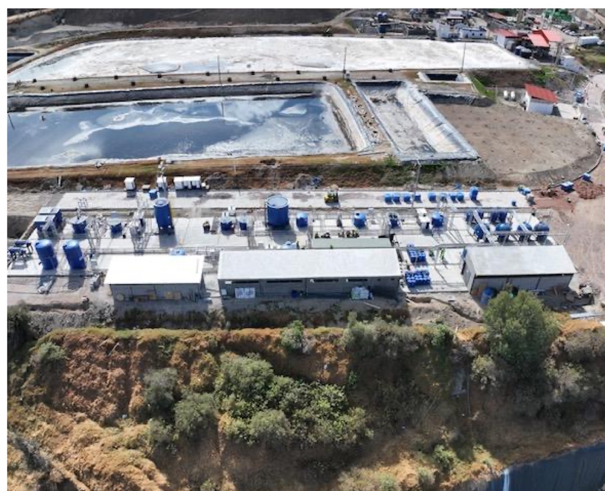
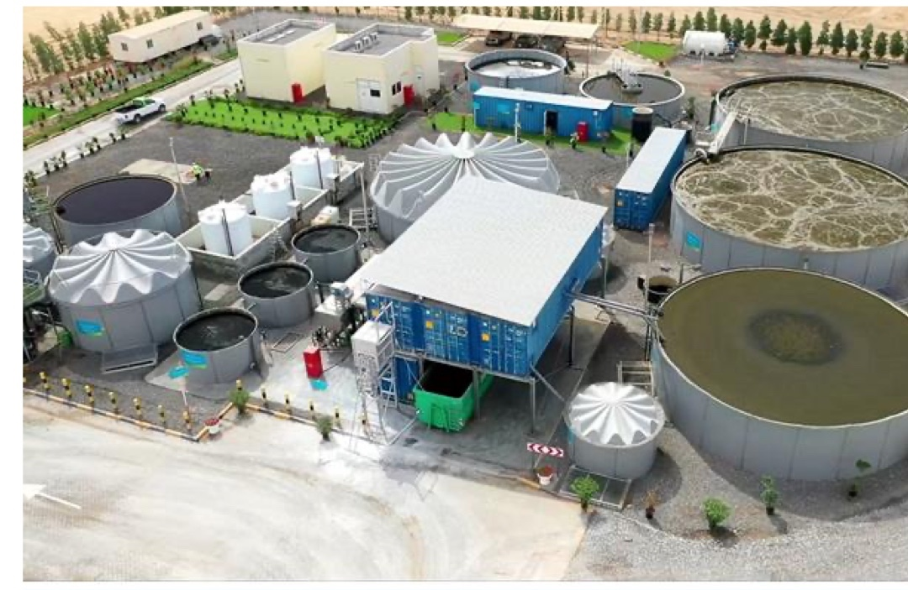
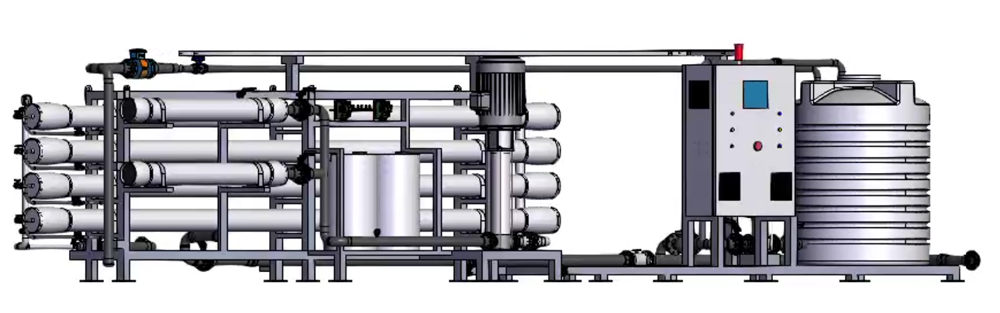

Water. Technology. Possibility.
Water purification and industrial effluent processing — delivering proprietary modular treatment solutions engineered for complex environmental challenges.
Global operational footprint spanning Europe, MENA, and Latin America.
Proprietary electro-coagulation and advanced oxidation processes with minimal sludge.
End-to-end delivery from bench validation to long-term BOOT operations.
Technology for a world of water.
Hydro designs, constructs, installs and operates effective water treatment solutions engineered for reliability under demanding climatic and industrial conditions.
Designed around each client
Every effluent and municipal water stream carries unique chemical and geological signatures. Hydro combines modular process steps tailored precisely to client compliance specifications.
Proprietary technology. Global deployment.
Patented electro-treatment units are manufactured under UK quality assurance for rapid containerised transport and on-site commissioning across extreme operating environments.
From design to operation.
A unified four-stage delivery partnership covering every technical and operational phase.
Design
Custom solutions engineered for complex industrial effluent and drinking water applications.
Construct
Treatment systems built around precision-fabricated modular process steps.
Install
Seamless containerised deployment across diverse industries and geographies.
Operate
Full-lifecycle operation ensuring sustained water quality and regulatory compliance.
Experience with impact.
A legacy of dealing with complexity — resolving severe landfill leachates, legacy mine drainage, construction runoff, and hyper-saline effluent.
Protecting river basins.
Hydro engineered a specialized multi-stage leachate treatment plant neutralizing high BOD, COD, ammonia, and heavy metals so treated water returns safely to Andean river basins.

Minimal-sludge proprietary electro-coagulation removing dissolved zinc and lead ions from acidic legacy mine discharge.
A measurable difference.
Hydro reviewed one of the most polluting legacy mines in Wales and deployed its electro-coagulation technology to restore downstream river ecosystems.
Clear results. Measured.
Four mobile Hydro Current treatment plants operated continuously on-site to remove suspended particles from high-volume construction runoff.
Treatment consistently exceeded stringent environmental discharge standards enforced by the Environment Agency.
Complex water. Clear evidence.
Example of a Hydro treatment configuration, comparing raw input water, treated water, and strict discharge requirements.
| Parameter | Input | After Hydro Treatment | Output Requirement | Elimination |
|---|---|---|---|---|
| COD (Chemical Oxygen Demand) | 4,856 | 26 | 100 | -99.5% |
| Oil & grease | 300 | 2 | 15 | -99.3% |
| TSS (Total Suspended Solids) | 250 | 3 | 60 | -98.8% |
| BOD (Biochemical Oxygen Demand) | 2,050 | 8 | 60 | -99.6% |
| Total nitrogen | 400 | 7 | 10 | -98.3% |
| Ammonia | 247 | 2 | 3 | -99.2% |
A history of progress.
Hydro founded
The beginning of Hydro Industries in Wales, establishing proprietary core electro-treatment IP.
BEE’AH commissioned
Award-winning wastewater recycling plant commissioned in Sharjah, UAE.
Quito leachate plant
Large-scale municipal landfill leachate facility completed in Q3 2024.
Group development
JEMS Environmental specialist engineering team joins the Hydro Group.
Expanding applications
New international deployments across Sucre, Montecristi and Santa Cruz.
One group. International presence.
Hydro Industries Limited • United Kingdom
Wholly owned entities support the group’s international presence across the UK, the Middle East, and Latin America, alongside a strategic regional joint venture office in Bahrain.
Core R&D, modular manufacturing, UK environmental remediation & JEMS integration.
Wastewater. New purpose.
Award-winning treatment system for landfill liquid waste and local industrial effluent, engineered to convert contaminated waste into irrigation-quality water for municipal reuse.
Approx. / October 2026

More freshwater. Higher yield.
Hydro’s development case integrates electro-chemical pre-conditioning to reduce brine reject and energy consumption while delivering higher freshwater yields.
70%+ yield capability vs. 40–50% conventional reverse osmosis benchmarks.
Significantly lowers hyper-saline discharge volumes returned to marine ecosystems.
Pre-conditioning minimizes membrane fouling and high-pressure pumping demand.
Recover. Reuse. Repeat.

Hydro is building a closed-loop plant designed to reduce pressure on local groundwater aquifers. Under a long-term service agreement, Hydro will also operate and maintain the facility.